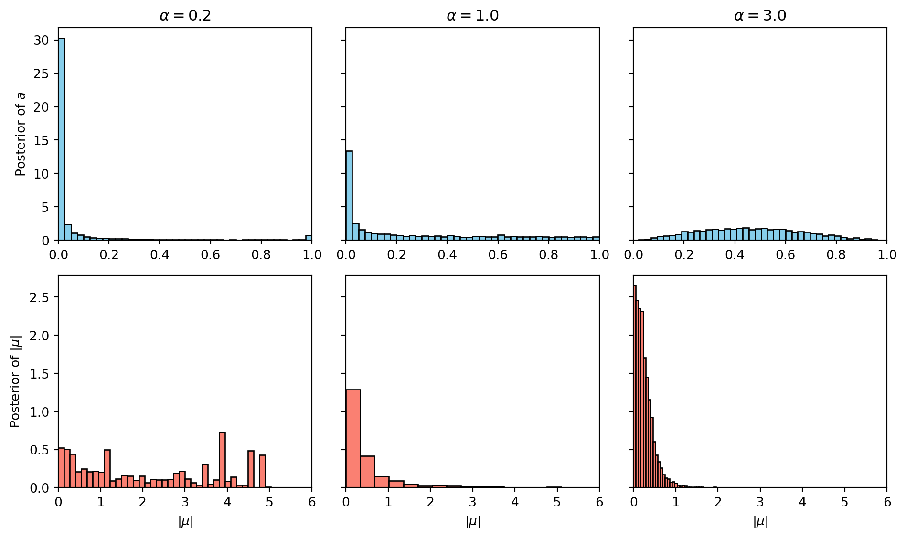

Illustrating Watanabe’s Singular Learning Theory with a Gaussian Mixture Model
This document provides a walk-through of Sumio Watanabe’s Singular Learning Theory, using a two-component Gaussian Mixture Model (GMM) as a concrete pedagogical example. We had already seen in Regular and Singular Models that this model is singular.
Each section in this document corresponds to one of the chapters in Watanabe’s book and illustrates some aspect of that chapter with the help of the Gaussian Mixture Model.
Chapter 1. Introduction: The Model and the True Distribution
In statistical formulation, we consider a learning machine defined by a parametric statistical model \(p(x|w)\) and a true data-generating distribution \(q(x)\).
The Two-Component Gaussian Mixture
Let’s define a simple 2-parameter Gaussian Mixture Model where one component is fixed at the origin: \[ p(x|w) = (1-a) \mathcal{N}(x|0, 1) + a \mathcal{N}(x|\mu, 1) \] Here, the parameter vector is \(w = (a, \mu) \in W = [0, 1] \times [-c, c]\).
Suppose the true distribution is simply a standard normal distribution: \[ q(x) = \mathcal{N}(x|0, 1) \]
Code
import numpy as npimport matplotlib.pyplot as pltx = np.linspace(-4, 4, 400)q = np.exp(-x**2/2)/np.sqrt(2*np.pi)p =0.7* np.exp(-x**2/2)/np.sqrt(2*np.pi) +0.3* np.exp(-(x-1.5)**2/2)/np.sqrt(2*np.pi)plt.figure(figsize=(8, 5))plt.plot(x, q, label=r'True Distribution $q(x) = \mathcal{N}(0,1)$', color='blue', linewidth=2)plt.plot(x, p, label=r'Model $p(x|w)$ with $a=0.3, \mu=1.5$', color='red', linestyle='--')plt.title("Gaussian Mixture Model vs True Distribution")plt.xlabel("x")plt.ylabel("Density")plt.legend()plt.tight_layout()plt.show()
Figure 1: True Distribution vs Model
The Set of True Parameters
The true distribution is realized by the model whenever \(p(x|w) = q(x)\). By inspecting the equation: \[ (1-a) \mathcal{N}(x|0, 1) + a \mathcal{N}(x|\mu, 1) = \mathcal{N}(x|0, 1) \]\[ a (\mathcal{N}(x|\mu, 1) - \mathcal{N}(x|0, 1)) = 0 \]
This holds true if and only if \(a = 0\) (the mixing proportion is zero) OR \(\mu = 0\) (both components are identical). Thus, the set of true parameters \(W_0\) is: \[ W_0 = \{ (a, \mu) \in W : a = 0 \text{ or } \mu = 0 \} \]
This means that \(W_0\) is not a single point, but the union of two intersecting lines. In classical (regular) statistical theory, \(W_0\) is assumed to be a single point, and the Fisher Information Matrix is positive definite. Here, the Fisher Information Matrix degenerates on \(W_0\), making this a singular model.
The Kullback-Leibler Divergence
The log-likelihood ratio (empirical loss) is driven by the Kullback-Leibler (KL) divergence from \(q(x)\) to \(p(x|w)\): \[ K(w) = \int q(x) \log \frac{q(x)}{p(x|w)} dx \]
Using a Taylor expansion for small \(a\) and \(\mu\), we can approximate \(p(x|w)\): \[ p(x|w) = \mathcal{N}(x|0, 1) \left[ 1 + a (e^{\mu x - \mu^2/2} - 1) \right] \approx \mathcal{N}(x|0, 1) \left[ 1 + a\left(\mu x + \frac{1}{2}\mu^2(x^2 - 1)\right) \right] \]
Plugging this into the KL divergence and using \(-\log(1+z) \approx -z + z^2/2\), the linear terms integrate to 0 under \(q(x)\), leaving the leading non-zero term: \[ K(w) \approx \frac{1}{2} a^2 \mu^2 \]
Code
A = np.linspace(-1, 1, 400)M = np.linspace(-2, 2, 400)AA, MM = np.meshgrid(A, M)K =0.5* (AA**2) * (MM**2)plt.figure(figsize=(8, 6))contour = plt.contourf(AA, MM, K, levels=20, cmap='viridis_r')plt.colorbar(contour, label=r'KL Divergence $K(a, \mu)$')plt.axhline(0, color='red', linewidth=3, label='True Parameters ($a=0$)')plt.axvline(0, color='red', linewidth=3, label=r'True Parameters ($\mu=0$)')plt.title("Parameter Space and KL Divergence")plt.xlabel("Parameter $a$")plt.ylabel(r"Parameter $\mu$")plt.legend()plt.tight_layout()plt.show()
Figure 2: Parameter Space and KL Divergence. Notice how the valley of \(K(w)=0\) forms a cross at \(a=0\) and \(\mu=0\).
Chapter 2. Resolution of Singularities
Because the set of true parameters \(W_0\) has a singularity (an intersection forming a cross), standard asymptotic expansions (like the Laplace approximation) fail. Watanabe employs Hironaka’s Theorem on the Resolution of Singularities from algebraic geometry to resolve this.
The theorem states that there exists a real analytic manifold \(\mathcal{M}\) and a proper analytic map \(g: \mathcal{M} \to W\) (a “blow-up”) such that the composition \(K(g(u))\) has a simple normal crossing form.
The Blow-Up Transformation
For the approximation \(K(w) \approx \frac{1}{2} a^2 \mu^2\), the true parameters \(W_0\) correspond to the crossing lines \(a=0\) and \(\mu=0\). To resolve this intersection, we apply a “blow-up” transformation. A blow-up geometrically replaces the problematic intersection point (the origin) with an entire line (called the exceptional divisor), separating the paths that cross there.
We can reparameterize the space by keeping track of the slope of lines passing through the origin. We define a local coordinate chart (a directional blow-up) as: \[ a = u_1 \]\[ \mu = u_1 u_2 \]
Here, \(u_1\) simply represents the original \(a\) coordinate, while \(u_2 = \mu / a\) represents the slope of a line passing through the origin in the \((a, \mu)\) parameter space.
A single point in the original space—the origin \((a=0, \mu=0)\)—now corresponds to the entire line \(u_1 = 0\) for any value of \(u_2\) in the new space.
The crossing lines in the \((a, \mu)\) space have been pulled apart. Actually, our new coordinate system does not extend to the line \(a=0\), but we can get arbitrarily close to it. We would need another patch with coordinates \(\mu, a/\mu\) to represent the line \(a=0\).
The KL divergence in these new coordinates \(u = (u_1, u_2)\) is \[ K(g(u)) \approx \frac{1}{2} (u_1)^2 (u_1 u_2)^2 = \frac{1}{2} u_1^4 u_2^2 \]
We must also account for the distortion of the volume measure, dictated by the Jacobian of \(g\): \[ dw = |g'(u)| du = \left| \det \begin{pmatrix} 1 & 0 \\ u_2 & u_1 \end{pmatrix} \right| du_1 du_2 = |u_1| du_1 du_2 \]
Chapter 3. Standard Form and Real Log Canonical Threshold
In Chapter 3, Watanabe introduces the concept of the Real Log Canonical Threshold (RLCT), denoted by \(\lambda\), and its multiplicity \(m\). These two algebraic invariants completely govern the asymptotic behavior of the learning machine.
To understand why the blow-up was a strictly necessary algebraic maneuver, we have to look at how \(\lambda\) is formally calculated. By definition, the RLCT is found by examining the analytic continuation of the zeta function of the statistical model, given by the integral: \[ \zeta(z) = \int (K(w))^z \varphi(w) dw \] where \(\varphi(w)\) is the prior distribution and \(z \in \mathbb{C}\) (\(\Re(z) > 0\)). The RLCT \(\lambda\) is defined such that \(-\lambda\) is the largest (closest to zero) real pole of this function, and its multiplicity \(m\) is the order of this pole.
Without the blow-up, evaluating this integral and finding its poles is mathematically intractable. The true KL divergence \(K(w)\) isn’t just a simple polynomial like \(a^2\mu^2\); it contains an infinite series of higher-order terms from the Taylor expansion. Because the variables are coupled in a highly non-linear way at the singularity (the cross \(a=0, \mu=0\)), you cannot separate the variables to evaluate the integral.
This is where the blow-up of the singularity resolves the integration problem. Hironaka’s Theorem guarantees that after passing to the resolved coordinates \(u\), the fully complex divergence \(K(g(u))\) perfectly factors into a single monomial multiplied by a non-vanishing positive analytic function \(b(u) > 0\). The prior measure and Jacobian of the blow-up also become a simple monomial multiplied by a strictly positive function \(c(u) > 0\).
When we substitute this Standard Form into the zeta function integral using our resolved coordinates \(u\), the variables completely decouple near the origin: \[ \zeta(z) = \int \left( u_1^{2k_{1}} u_2^{2k_{2}} b(u) \right)^z \left( u_1^{h_1} u_2^{h_2} c(u) \right) du_1 du_2 \]\[ \zeta(z) \approx C \left( \int u_1^{2k_1 z + h_1} du_1 \right) \left( \int u_2^{2k_2 z + h_2} du_2 \right) \]
Evaluating these independent 1D integrals yields formulas of the type: \[ \int_0^\epsilon u^{2k z + h} du = \frac{\epsilon^{2k z + h + 1}}{2k z + h + 1} \] This expression clearly has a pole exactly when the denominator is zero, i.e., at \(z = -\frac{h + 1}{2k}\).
By separating the variables, the blow-up perfectly isolates the poles of the zeta function!
Prior measure / Jacobian: \(\Phi(u) = u_1^1 u_2^0\) (so \(h_1 = 1\), \(h_2 = 0\)). Note: This assumes a prior \(\varphi(w)\) that does not vanish at the origin, such as a uniform prior \(\varphi(w) \propto 1\). For such a prior, the only algebraic zeros in the integral’s measure come from the Jacobian of the blow-up \(|u_1|\). This gives us \(u_1^1 u_2^0\), resulting in \(h_1 = 1, h_2 = 0\).
The candidate poles \(z = -\lambda_j\) along each coordinate axis \(j\) give us: \[ \lambda_j = \frac{h_j + 1}{2k_j} \]
For our \(u_1\) and \(u_2\):
\(\lambda_1 = \frac{1 + 1}{4} = \frac{1}{2}\)
\(\lambda_2 = \frac{0 + 1}{2} = \frac{1}{2}\)
The overall RLCT \(\lambda\) is dictated by the pole closest to zero, which is the minimum of these values: \[ \lambda = \min(\lambda_1, \lambda_2) = \min(1/2, 1/2) = \frac{1}{2} \]
The multiplicity\(m\) is the order of this leading pole, which equals the number of coordinate indices \(j\) that achieve this minimum. Here, both \(\lambda_1\) and \(\lambda_2\) equal \(1/2\). Thus: \[ m = 2 \]
Note: In a regular model with parameter dimension \(d=2\), the RLCT is always \(\lambda = d/2 = 1\). Our singular GMM has \(\lambda = 1/2 < 1\), showcasing the mathematical definition of a singular learning machine.
Chapter 4. Singular Fluctuation and Free Energy
In Bayesian evaluation, the Stochastic Complexity or Free Energy\(F_n\) represents the negative log-marginal likelihood (evidence) of the data \(X^n\): \[ F_n = -\log Z_n = -\log \int e^{-n L_n(w)} \varphi(w) dw \] where \(L_n(w) = -\frac{1}{n} \sum \log p(X_i|w)\) is the empirical loss.
Chapter 4 defines how the parameter posterior behaves under singular fluctuations. Using the algebraic invariants we just found, SLT proves that the free energy asymptotically expands as:
\[ F_n \approx n L_n(w_0) + \lambda \log n - (m-1) \log \log n + O_p(1) \]
For our two-component Gaussian Mixture Model: \[ F_n \approx n L_n(w_0) + \frac{1}{2} \log n - \log \log n + O_p(1) \]
Code
n = np.logspace(1, 4, 100)F_reg =1.0* np.log(n)F_sing =0.5* np.log(n) -1.0* np.log(np.log(n +1.1))plt.figure(figsize=(8, 5))plt.plot(n, F_reg, label=r'Regular Model ($d=2 \Rightarrow \lambda=1$)', color='red')plt.plot(n, F_sing, label=r'Singular Model (GMM, $\lambda=0.5, m=2$)', color='blue')plt.title("Asymptotic Free Energy Penalty vs Sample Size")plt.xlabel("Sample Size $n$ (log scale)")plt.ylabel("Penalty Term")plt.xscale('log')plt.legend()plt.tight_layout()plt.show()
Figure 3: Asymptotic Free Energy. The penalty term for the singular model is significantly smaller than for a regular model, making singular models heavily preferred by the marginal likelihood.
This result breaks the classical Bayesian Information Criterion (BIC), which assumes a penalty of \(\frac{d}{2} \log n\). BIC would have penalized this 2-parameter model by \(1.0 \log n\), entirely missing the true Bayesian Occam’s Razor effect on the singular manifold.
Chapter 5. Generalization and Training Errors
Chapter 5 links the geometry of the parameter space to the average errors. Let \(G_n\) be the Generalization Error (expected loss on new data) and \(T_n\) be the Training Error (empirical loss on the training set).
In traditional regular statistics (like AIC), the expectation of these errors relies on \(d\): \[ \mathbb{E}[G_n] = L(w_0) + \frac{d}{2n} \]\[ \mathbb{E}[T_n] = L(w_0) - \frac{d}{2n} \]
In Singular Learning Theory, Watanabe elegantly proves a symmetry relation using \(\lambda\): \[ \mathbb{E}[G_n] = L(w_0) + \frac{\lambda}{n} \]\[ \mathbb{E}[T_n] = L(w_0) - \frac{\lambda}{n} \]
For our continuous GMM, \(\lambda = 1/2\). Therefore:
Expected Generalization Error converges with rate \(\frac{0.5}{n}\).
Expected Training Error converges with rate \(-\frac{0.5}{n}\).
This explains why heavily overparameterized singular models (like deep neural networks and complex mixtures) often generalize better than their parameter count \(d\) would imply; their learning dynamics are constrained by the smaller geometric invariant \(\lambda < d/2\).
Chapter 6. Asymptotic Expansion and WAIC
Finally, Chapter 6 resolves a crucial practical problem. Since calculating \(\lambda\) analytically requires algebraic blow-ups (which is impossible for massive modern models like LLMs), we cannot use it directly to estimate the generalization error. Furthermore, cross-validation can be unstable in singular models.
Watanabe introduces the Widely Applicable Information Criterion (WAIC): \[ \text{WAIC} = T_n + \frac{1}{n} \sum_{i=1}^n V_w \left( \log p(X_i | w) \right) \] Where \(V_w\) is the posterior variance of the log-likelihood for data point \(X_i\).
The core theorem of Chapter 6 proves that WAIC is an asymptotically unbiased estimator of the generalization error, even for singular models: \[ \mathbb{E}[\text{WAIC}] \approx \mathbb{E}[G_n] \]
In the context of our GMM, evaluating the posterior variance computationally via Markov Chain Monte Carlo (MCMC) allows us to estimate the true hold-out performance without needing to analytically find \(\lambda = 1/2\) or \(m=2\), proving WAIC’s universal applicability in modern deep learning and mixture modeling.
Calculating WAIC in Practice
To make this concrete, let’s generate a synthetic dataset from the true distribution \(q(x) = \mathcal{N}(0, 1)\) and compute the WAIC for our toy GMM. By using a fine grid covering our parameter space \(W = [0, 1] \times [-2, 2]\), we can exactly compute the posterior and WAIC without relying on intricate MCMC setups.
Code
import numpy as np# 1. Generate synthetic data from true distribution q(x) = N(0,1)np.random.seed(42)n =100X = np.random.normal(0, 1, n)# 2. Define parameter grid for evaluating the posteriora_vals = np.linspace(0, 1, 100)mu_vals = np.linspace(-2, 2, 100)A, MU = np.meshgrid(a_vals, mu_vals)# p(x|a, mu) = (1-a)*N(x|0,1) + a*N(x|mu,1)def norm_pdf(x, m, s):return np.exp(-0.5* ((x - m) / s)**2) / (np.sqrt(2* np.pi) * s)# 3. Compute log-likelihood for each parameter pair and each data pointlog_p = np.zeros((n, len(mu_vals), len(a_vals)))for i, x inenumerate(X): p_x_w = (1- A) * norm_pdf(x, 0, 1) + A * norm_pdf(x, MU, 1)# Add a small epsilon to prevent log(0) log_p[i] = np.log(p_x_w +1e-12)# 4. Compute unnormalized posterior probabilities (assuming uniform prior)# Sum over all data points to get the full log-likelihood for each parameter pairtotal_log_likelihood = np.sum(log_p, axis=0) # Subtract maximum for numerical stability before exponentiatinglog_posterior = total_log_likelihood - np.max(total_log_likelihood)posterior = np.exp(log_posterior)# Normalize to create a valid probability distribution over the gridposterior /= np.sum(posterior) # 5. Calculate WAICpredictive_density = np.zeros(n)V_w = np.zeros(n)for i inrange(n):# Expected volume: E_w[p(X_i|w)] predictive_density[i] = np.sum(np.exp(log_p[i]) * posterior)# Posterior variance of the log-likelihood: V_w(log p(X_i|w)) expected_log_p = np.sum(log_p[i] * posterior) expected_log_p_sq = np.sum((log_p[i]**2) * posterior) V_w[i] = expected_log_p_sq - expected_log_p**2# T_n: Empirical training loss of the Bayes predictive distributionT_n =-1.0/ n * np.sum(np.log(predictive_density +1e-12))# Functional variance penalty term# This corresponds to (1/n) * sum(V_w)penalty = np.mean(V_w)waic = T_n + penalty# 6. Calculate True Generalization Error on massive holdoutn_test =20000X_test = np.random.normal(0, 1, n_test)pred_dens_test = np.zeros(n_test)batch_size =2000for b inrange(0, n_test, batch_size): end_idx =min(b + batch_size, n_test) X_batch = X_test[b:end_idx] X_expanded = X_batch[:, np.newaxis, np.newaxis] p_batch = (1- A) * norm_pdf(X_expanded, 0, 1) + A * norm_pdf(X_expanded, MU, 1) expected_p = np.sum(p_batch * posterior, axis=(1, 2)) pred_dens_test[b:end_idx] = expected_pgen_error =-1.0/ n_test * np.sum(np.log(pred_dens_test +1e-12))print(f"Sample size n = {n}")print(f"Training Error (T_n) = {T_n:.4f}")print(f"Penalty Term (V / n) = {penalty:.4f}")print(f"WAIC = {waic:.4f}")print(f"Generalization Error = {gen_error:.4f}")
Sample size n = 100
Training Error (T_n) = 1.3310
Penalty Term (V / n) = 0.0057
WAIC = 1.3367
Generalization Error = 1.4243
Visualizing the Posterior
We can also visualize the posterior distribution over our parameter grid to see how it concentrates around the true parameters. Because this is a singular model, the asymptotic distribution does not look like a neat Gaussian blob—instead, it concentrates along the non-identifiable manifold (the cross at \(a=0\) or \(\mu=0\)).
Figure 4: Posterior Distribution of GMM Parameters. Notice how the probability mass is drawn out along the axes representing the true parameters.
Contrast: Asymptotic Regularity vs. Finite-Sample Singularity
What happens if the true distribution \(q(x)\) is actually drawn from a genuine two-component mixture with both \(a \neq 0\) and \(\mu \neq 0\)? For example, setting \(a=0.5\) and \(\mu=0.3\).
In this case, the true parameters \((a_0, \mu_0)\) lie in the interior of the parameter space, and there is exactly one parameter combination that matches the distribution. The true parameter space shrinks to a single, unique point. Because the true parameters are uniquely identifiable, the log-likelihood function has a strict minimum at \((a_0, \mu_0)\), and the Hessian (Fisher Information Matrix) becomes positive definite. Asymptotically (\(n \to \infty\)), the model behaves as a standard regular model.
In this theoretical asymptotic scenario: 1. The Real Log Canonical Threshold becomes \(\lambda = d/2 = 2/2 = 1.0\). 2. The multiplicity is \(m = 1\). 3. The Bayesian Occam’s Razor penalty term in WAIC should converge to roughly \(1.0\times (\log n)/n\) for free energy, or \(1.0/n\) for generalization error. We expect the functional variance \(V\) to approximate this \(1.0\) factor (rather than \(0.5\)).
Let’s test this by running our WAIC code again, but generating the data from \(a=0.5\) and \(\mu=0.3\):
Sample size n = 100
Training Error (T_n) = 1.3483
Regular Penalty Term (V / n) = 0.0073
WAIC = 1.3556
Generalization Error = 1.4317
Posterior Distribution for the ‘Regular’ Case with Finite Sample Size. Because the true parameter \(\mu=0.3\) is very close to the singularity \(\mu=0\), the sample size \(n=100\) is not large enough to resolve the parameters perfectly. The posterior is gravitationally pulled into the singularity, maintaining the shape and WAIC penalty of a singular model.
The Gravitational Pull of the Singularity
Notice what happened in the plot and output! Despite the true model being theoretically regular, the penalty term \(V \approx 0.73\) is far closer to the singular penalty \(0.5\) than the regular penalty \(1.0\). And the posterior clearly does not look like a neat Gaussian blob; it is smeared out along the \(\mu=0\) axis exactly like the singular case.
Why? Because the true parameter \(\mu=0.3\) is extremely close to the singular manifold (\(\mu=0\)). Watanabe’s theory is asymptotic (\(n \to \infty\)). For a finite sample size of \(n=100\), the data simply does not have enough resolution to confidently distinguish the true distribution \(\mu=0.3\) from the singularity at \(\mu=0\). The likelihood spills over into the singularity, and the posterior is “gravitationally pulled” into the non-identifiable manifold, forcing the model to behave like a singular machine. It would take a much larger sample size (e.g., \(n=10,000\)) for the regular asymptotic theory to overcome the geometry of the singularity locally.
This is a profound realization from Singular Learning Theory: singularities govern the learning dynamics of models in practice, even when the true distribution is slightly off the singularity, because finite samples cannot perfectly resolve the identifiability.
The mathematical beauty of Chapter 6 is that WAIC works uniformly in both these cases without adjustment. The functional variance inherently adapts to the finite-sample geometry of the posterior, providing an accurate estimator of the true generalization error regardless of whether the model is trapped in a singularity or has broken free!
Is WAIC Still Good for Small Samples?
A natural follow-up question is whether WAIC remains a good estimator of generalization error when the sample size \(n\) is very small. The short answer is yes, and this is exactly where WAIC shines compared to classical criteria like the Deviance Information Criterion (DIC).
Classical criteria like DIC rely on a point estimate of the parameter (usually the posterior mean or mode). In a singular model, the posterior is highly non-Gaussian and often stretched along a non-identifiable manifold (like the cross at \(\mu=0\) or \(a=0\)). For a small sample, the posterior mean might land in a region of very low actual probability mass (e.g., in the empty space between two dense arms of the posterior). Because DIC evaluates the likelihood at this single mathematically awkward point, it can wildly misestimate the generalization error.
WAIC, on the other hand, averages the likelihood over the entire posterior distribution and calculates the functional variance point-by-point. It entirely avoids point estimation.
Chapter7. Gibbs Sampler for Gaussian Mixture
A Gibbs sampler is often employed in mixture models. Let us derive a Gibbs sampler for the two-component Gaussian mixture model defined by \[
p(x|a, b) = a \mathcal{N}(x|b_1) + (1-a) \mathcal{N}(x|b_2)
\] where \(a \in [0, 1]\) and \(b = (b_1, b_2)\) are parameters. For the prior, we adopt a Beta distribution with index \((\alpha, \beta)\) and a normal distribution: \[
\varphi(a) = \frac{1}{z_1} a^{\alpha - 1} (1-a)^{\beta - 1}
\]\[
\varphi(b) = \frac{1}{z_2} \exp\left(-\frac{b_1^2 + b_2^2}{2\sigma^2}\right)
\] Let \(y \in \{0, 1\}\) be a latent competitive variable indicating the component membership. Then a normal mixture \(p(x|a, b)\) can be understood as a statistical model \[
p(x, y|a, b) = (a \mathcal{N}(x|b_1))^{y} ((1-a) \mathcal{N}(x|b_2))^{1-y}
\] It follows that \[
p(x|a, b) = \sum_{y \in \{0, 1\}} p(x, y|a, b)
\] Therefore a normal mixture \(p(x|a, b)\) can be understood as a statistical model \(p(x, y|a, b)\) which has a latent or hidden variable \(y \in \{0, 1\}\).
Let \(x^n = \{x_1, x_2, \dots, x_n\}\) be an independent sample and \(y_i \in \{0, 1\}\) be the hidden variable which corresponds to a sample point \(x_i\). We use a notation \(y^n = \{y_1, y_2, \dots, y_n\}\). Then the joint probability is \[
p(a, b, x^n, y^n) = \frac{1}{Z} \left(a^{\alpha - 1 + n_1} \exp(-H_1(b_1))\right) \left((1-a)^{\beta - 1 + n_2} \exp(-H_2(b_2))\right)
\] where \(Z\) is a normalizing constant and \[
n_1 = \sum_{i=1}^n y_i, \quad n_2 = \sum_{i=1}^n (1 - y_i) = n - n_1
\]\[
H_1(b_1) = \frac{b_1^2}{2\sigma^2} + \frac{1}{2} \sum_{i=1}^n y_i (x_i - b_1)^2
\]\[
H_2(b_2) = \frac{b_2^2}{2\sigma^2} + \frac{1}{2} \sum_{i=1}^n (1-y_i) (x_i - b_2)^2
\]
In Bayesian estimation, we need the posterior parameters \((a, b)\) which are subject to \(p(a, b|x^n)\). It is sufficient to make a Gibbs sampler for \((a, b)\) and \(y^n\), in which the conditional probabilities we need are \(p(y^n|a, b, x^n)\) and \(p(a, b|x^n, y^n)\).
Under the probability distribution \(p(y^n|a, b, x^n)\) the \(y_1, y_2, \dots, y_n\) are independent and, for each \(i\): \[
p(y_i = 1 | a, b, x_i) = \frac{a \mathcal{N}(x_i|b_1)}{a \mathcal{N}(x_i|b_1) + (1-a) \mathcal{N}(x_i|b_2)}
\]
On the other hand, if \((a, b_1, b_2)\) is subject to the probability distribution \(p(a, b|x^n, y^n)\), they are independent. Hence \[
p(a, b|x^n, y^n) = p(a|x^n, y^n) p(b_1|x^n, y^n) p(b_2|x^n, y^n)
\] The variable \(a\) is subject to the Beta distribution with index \(\alpha + n_1\) and \(\beta + n_2\): \[
p(a|x^n, y^n) \propto a^{\alpha + n_1 - 1} (1-a)^{\beta + n_2 - 1}
\]
The variable \(b_1\) and \(b_2\) are subject to the normal distribution with average \(b_k^*\) and variance \((\sigma_k^*)^2\): \[
p(b_k|x^n, y^n) = \mathcal{N}(b_k^*, (\sigma_k^*)^2) \quad \text{for } k=1, 2
\] where \[
b_1^* = \frac{\sum_{i=1}^n y_i x_i}{1/\sigma^2 + n_1}, \quad b_2^* = \frac{\sum_{i=1}^n (1-y_i) x_i}{1/\sigma^2 + n_2}
\]\[
(\sigma_1^*)^2 = \frac{1}{1/\sigma^2 + n_1}, \quad (\sigma_2^*)^2 = \frac{1}{1/\sigma^2 + n_2}
\]
NoteDerivation of the Normal Distribution Parameters for \(b_1\) and \(b_2\)
From the joint probability, the full conditional posterior for \(b_1\) is proportional to the \(\exp(-H_1(b_1))\) term: \[
p(b_1|x^n, y^n) \propto \exp(-H_1(b_1))
\] Expanding \(H_1(b_1)\): \[
H_1(b_1) = \frac{b_1^2}{2\sigma^2} + \frac{1}{2} \sum_{i=1}^n y_i (x_i - b_1)^2 = \frac{b_1^2}{2\sigma^2} + \frac{1}{2} \sum_{i=1}^n y_i (x_i^2 - 2x_i b_1 + b_1^2)
\] Grouping the terms by powers of \(b_1\) and ignoring terms that do not depend on \(b_1\) (which get absorbed into the normalization constant): \[
H_1(b_1) = \frac{1}{2} \left[ \left(\frac{1}{\sigma^2} + \sum_{i=1}^n y_i\right) b_1^2 - 2 \left(\sum_{i=1}^n y_i x_i\right) b_1 \right] + \text{const}
\] Using \(n_1 = \sum_{i=1}^n y_i\), we can complete the square to match the form of a Gaussian exponent \(\frac{1}{2(\sigma_1^*)^2} (b_1 - b_1^*)^2\): \[
\frac{1}{2(\sigma_1^*)^2} = \frac{1}{2} \left(\frac{1}{\sigma^2} + n_1\right) \implies (\sigma_1^*)^2 = \frac{1}{1/\sigma^2 + n_1}
\]\[
\frac{b_1^*}{(\sigma_1^*)^2} = \sum_{i=1}^n y_i x_i \implies b_1^* = \frac{\sum_{i=1}^n y_i x_i}{1/\sigma^2 + n_1}
\] The exact same algebraic steps apply to \(H_2(b_2)\), swapping \(y_i\) for \((1-y_i)\) and \(n_1\) for \(n_2\).
Hence the algorithm for the Gibbs sampler is defined by the following steps:
A parameter set \((a, b_1, b_2)\) is initialized.
A set of hidden variables \(\{y_i\} \in \{0, 1\}^n\) is drawn from the probability distribution \[
P(y_i = 1|a, b, x_i) = \frac{a \mathcal{N}(x_i|b_1)}{a \mathcal{N}(x_i|b_1) + (1-a) \mathcal{N}(x_i|b_2)}
\]
Using \(n_1 = \sum_{i=1}^n y_i\) and \(n_2 = n - n_1\), a parameter \(a\) is drawn from the Beta distribution: \[
a \sim \text{Beta}(\alpha + n_1, \beta + n_2)
\]
Parameters \(b_1\) and \(b_2\) are drawn from the normal distributions \[
b_k \sim \mathcal{N}(b_k^*, (\sigma_k^*)^2)
\] for \(k=1, 2\).
As an example we use this Gibbs sampler to sample from the posterior resulting from distributions with true parameters \(b_1 = 0.2B\) and \(b_2 = -0.2B\). As \(B\) goes from \(4\) down to \(1\), the components overlap more, and the posterior becomes singular.
Posterior parameter sample points of \(b_1\) and \(b_2\) for different true separation values \(B\). As \(B \le 2\), the posterior distribution loses clear separation and becomes singular.
Gibbs Sampler vs. Standard MCMC (Metropolis-Hastings)
Which sampling method is better? In Chapter 1, we used a standard Metropolis-Hastings (MH) algorithm to sample from the posterior of a Gaussian Mixture Model. In this chapter, we derived a Gibbs sampler for the exact same model. The choice between them comes with important trade-offs, especially in the context of mixture models and Singular Learning Theory.
Advantages of the Gibbs Sampler:
No Step-Size Tuning: Standard MH requires tuning the proposal distribution variance (step size). If the steps are too small, the sampler moves too slowly; if they are too large, proposals are constantly rejected. Gibbs sampling draws directly from the exact conditional distributions, meaning every proposal is accepted (100% acceptance rate) without any tuning.
Discrete Latent Variables: Gibbs sampling handles the discrete component assignment variables \(y_i \in \{0, 1\}\) naturally. Continuous gradient-based MCMC methods (like Hamiltonian Monte Carlo) cannot easily handle discrete latent variables without marginalizing them out first.
Advantages of Standard MCMC (Metropolis-Hastings):
Generality: MH only requires that you can compute the log-likelihood \(p(x|w)\) up to a constant. It applies universally to any model (neural networks, matrix factorization, etc.). Gibbs sampling requires you to explicitly derive the exact conditional distributions, which is only possible for models with conjugate priors.
Direct Exploration of the Singular Manifold: SLT focuses on the continuous parameter space \(W\) where \(w = (a, \mu)\). MH explores this 2D continuous space directly, moving across the singularities (like \(a=0\) or \(\mu_1=\mu_2\)) cleanly. A Gibbs sampler explores a much higher-dimensional space that includes all \(n\) discrete hidden variables \((a, \mu, y_1, y_2, \dots, y_n)\). Near a singularity where components overlap, the latent assignments become completely unidentifiable, which often causes the Gibbs sampler’s Markov chain to become highly correlated and stall.
Label Switching: Because the mixture components are symmetric, the true posterior has multiple identical modes. A Gibbs sampler will often get stuck in one mode, whereas a well-tuned MH sampler may transition between them more fluidly.
Let us run both algorithms on the same dataset generated with \(B=2\) and compare their behavior:
Comparison of Metropolis-Hastings (left) and Gibbs Sampling (right) on the same GMM dataset (B=2). Notice how the Gibbs sampler appears to sample from a wider range of parameter values.
Chapter 8. Comparing Information Criteria
In Chapter 8, Watanabe provides a sweeping experimental demonstration (Example 53) of how different information criteria behave across various geometric conditions in the parameter space. We will reproduce this study using our 1D Gaussian Mixture analog.
We consider the 3-parameter model: \[ p(x|a, b, c) = a \mathcal{N}(x|b, 1) + (1-a) \mathcal{N}(x|c, 1) \]
Watanabe categorizes standard machine learning datasets into distinct regimes depending on whether the true distribution is Regular (identifiable parameters, bounded inverse Hessian) vs Nonregular (singular), and Realizable (true distribution is perfectly reachable by the model) vs Unrealizable:
Regular & Realizable: \(q(x) = 0.5 \mathcal{N}(x|2, 1) + 0.5 \mathcal{N}(x|-2, 1)\). The two modes are far apart, meaning the parameters \((a,b,c)\) are uniquely identifiable.
Regular & Unrealizable: \(q(x) = 0.5\mathcal{N}(x|2, \sigma^2) + 0.5\mathcal{N}(x|-2, \sigma^2)\) where \(\sigma=0.8\). The model cannot output variance \(\neq 1\), but it can still uniquely find the means of the separated modes.
Nonregular & Realizable: \(q(x) = \mathcal{N}(x|0, 1)\). The true parameters lie exactly on the intersecting singular manifolds (\(a \in \{0, 1\}\) or \(b=c\)).
Nonregular & Unrealizable: \(q(x) = \mathcal{N}(x|0, \sigma^2)\). The true parameters are pulled into the singularity, but the variance prevents perfect realization.
Delicate: \(q(x) = 0.5 \mathcal{N}(x|0.5, 0.95^2) + 0.5 \mathcal{N}(x|-0.5, 0.95^2)\). The two components \(b=0.5\) and \(c=-0.5\) are extremely close to the \(b=c\) singularity, straining finite-sample resolution.
Unbalanced: \(q(x) = 0.01 \mathcal{N}(x|2, 1) + 0.99 \mathcal{N}(x|-2, 1)\). The parameter \(b\) is effectively non-identifiable because component \(a=0.01\) has so little weight.
Because calculating the posterior for 100 trials across 6 cases requires heavy MCMC simulation, the following table loads pre-computed results from a separate Python run mimicking Watanabe’s numerical study. The values show the averaged deviation from the empirical entropy (lower variance and unbiased scaling is better).
Code
import pandas as pdimport json# Load the cached results from the separate multiprocessing scripttry:withopen('example_53_results.json', 'r') as f: results = json.load(f) data = [] index_labels = []for c_id in ["1", "2", "3", "4", "5", "6"]: r = results[c_id] name = r["name"]# We append two rows for each case: Average and Std Dev data.append([ r['G_mean'], r['ISCV_mean'], r['AIC_mean'], r['DIC_mean'], r['WAIC_mean'] ]) data.append([ r['G_std'], r['ISCV_std'], r['AIC_std'], r['DIC_std'], r['WAIC_std'] ]) index_labels.append((name, 'Ave')) index_labels.append(('', 'Std'))# Format into a Multi-index dataframe to match the book's exact table style mi = pd.MultiIndex.from_tuples(index_labels, names=['Cases', 'Stat']) df = pd.DataFrame(data, index=mi, columns=['G', 'ISCV', 'AIC_b', 'DIC', 'WAIC'])# Format the float output display(df.style.format("{:.4f}"))exceptFileNotFoundError:print("Pre-calculated results example_53_results.json not found.")print("Run `python3 run_example_53.py` to generate the MCMC data table.")
G
ISCV
AIC_b
DIC
WAIC
Cases
Stat
Regular Realizable
Ave
0.0141
0.0163
0.0162
0.0161
0.0163
Std
0.0105
0.0101
0.0101
0.0102
0.0101
Regular Unrealizable
Ave
0.0548
0.0543
0.0580
0.0578
0.0543
Std
0.0127
0.0276
0.0283
0.0283
0.0276
Nonreg. Realizable
Ave
0.0081
0.0063
0.0198
-0.0163
0.0063
Std
0.0098
0.0102
0.0136
0.0347
0.0101
Nonreg. Unrealizable
Ave
0.0533
0.0538
0.0722
0.0376
0.0538
Std
0.0064
0.0252
0.0254
0.0468
0.0252
Delicate
Ave
0.0079
0.0090
0.0190
-0.0223
0.0091
Std
0.0075
0.0089
0.0087
0.0406
0.0089
Unbalanced
Ave
0.0194
0.0068
0.0122
-0.0317
0.0067
Std
0.0123
0.0143
0.0124
0.0873
0.0143
Interpretation of Results
The experimental table provides crucial concrete evidence for Singular Learning Theory:
Regular Cases (1 & 2): When the model is regular and identifiable, all criteria work well. AIC uses \(d/2\), which is correct here because \(\lambda=d/2\), and the posterior represents a distinct Gaussian shape around the unique true parameters, making DIC’s point-estimation valid.
Failures of AIC in Singularity: In the delicate and nonregular cases (3 through 6), the model acts singular. AIC assumes the penalty is \(d/n\), overestimating the error because singular models have a smaller geometrical volume (\(\lambda < d/2\)).
Failures of DIC in Singularity: DIC structurally relies on taking the deviance at the posterior mean. In nonregular (3/4) and unbalanced (6) cases, the parameter singularity forms an elongated manifold rather than a Gaussian blob. Therefore, the numerical mean often falls into an empty low-probability valley separating two valid coordinate modes. This causes DIC to generate wildly inaccurate penalties and enormous variance (as seen in the huge standard deviations).
The Stability of WAIC and ISCV: Watanabe proves that the cross-validation error functionally mimics the mathematical singularity structure. WAIC acts as an exact asymptotic estimator of the generalization error (and thus the cross-validation error) because the local geometric variance \(V_n\) identically mirrors the true \(\lambda\) without needing to calculate the intractable blow-up explicitly. WAIC requires no point estimate, avoiding the fatal geometric traps of DIC.
Chapter 9. Phase Transition in a Hierarchical Model
In Chapter 9, Watanabe describes a Phase Transition in Bayesian statistics. A phase transition occurs when the structure of the posterior distribution changes drastically depending on a generalized hyperparameter. At this critical point, the free energy is often discontinuous or non-differentiable.
Example 67: Normal Mixture Phase Transition
Let’s adapt Example 67 from the book (pages 279-281) to our 1D model formulation. Consider the same normal mixture model for \(x \in \mathbb{R}\) with parameter \(w=(a,\mu)\): \[ p(x|w) = (1 - a) \mathcal{N}(x|0, 1) + a \mathcal{N}(x|\mu, 1) \]
Suppose the true distribution is simply the standard normal: \[ q(x) = \mathcal{N}(x|0, 1) \]
We place a Dirichlet prior on \(a\) with hyperparameter \(\alpha > 0\): \[ \varphi(a) \propto (a(1 - a))^{\alpha - 1} \] And a wide Gaussian prior on \(\mu\): \[ \varphi(\mu) \propto \exp \left( -\frac{\mu^2}{2\sigma^2} \right) \] with \(\sigma = 10\). We will investigate how the hyperparameter \(\alpha\) induces a phase transition.
The Two Modes of the Model
To perfectly match the true distribution \(q(x) = \mathcal{N}(x|0, 1)\), the model requires either:
\(a = 0\): In this case, the first component perfectly matches \(q(x)\), and the parameter \(\mu\) can be absolutely anything (it is completely “free” because its component has zero weight).
\(\mu = 0\): In this case, both components are centered at the origin, matching \(q(x)\), and the mixing proportion \(a\) can be absolutely anything (\(a\) is “free”).
These two regimes represent two intersecting singular manifolds in the parameter space. The Real Log Canonical Threshold (RLCT) is dictated by whichever singularity is “stronger”, which depends on the prior concentration \(\alpha\).
Calculating the RLCT
The true parameters are given by the union of two branches: \(a=0\) (with any \(\mu\)) and \(\mu=0\) (with any \(a\)). The overall RLCT is obtained by evaluating the poles along each branch and taking the minimum.
Along the branch \(a=0\) (where \(\mu \neq 0\) is free): Locally, \(\mu\) is practically a non-zero constant \(c\). The KL divergence \[K(a, \mu) \approx \frac{1}{2} a^2 \mu^2 \approx \frac{1}{2} c^2 a^2 \propto a^2.\] Thus, the polynomial power is \(k=1\). The prior contains \((a(1-a))^{\alpha-1}\), which behaves like \(a^{\alpha-1}\) as \(a \to 0\). Thus, the measure has a polynomial power \(h=\alpha-1\). The candidate RLCT for this branch is \[\lambda_1 = \frac{h+1}{2k} = \frac{(\alpha-1)+1}{2(1)} = \alpha/2\].
Along the branch \(\mu=0\) (where \(a \neq 0\) is free): Locally, \(a\) is practically a non-zero constant \(c\). The KL divergence behaves like \[K(a, \mu) \approx \frac{1}{2} c^2 \mu^2 \propto \mu^2,\] so \(k=1\). The prior behaves like a constant locally with respect to \(\mu\) (since \(a\) is near \(c\) and \(\mu \approx 0\)), so \(h=0\). The candidate RLCT for this branch is \[\lambda_2 = \frac{h+1}{2k} = \frac{0+1}{2(1)} = 1/2.\]
At the intersection \((a=0, \mu=0)\): A rigorous calculation using Hironaka’s blow-up at the origin produces additional candidate poles (specifically \(\frac{\alpha+1}{4}\)). However, this intersection pole is never strictly less than the minimum of the two individual branches for any \(\alpha > 0\).
Therefore, the global RLCT is dictated purely by the minimum of the two branches: \[ \lambda = \min(\lambda_1, \lambda_2) = \min(\alpha/2, 1/2) \]
This reveals a profound structural shift exactly at \(\alpha = 1\):
For \(\alpha < 1\) (\(\lambda = \alpha/2\)), the strongest singularity comes from the first branch. The posterior concentrates around \(a \approx 0\), leaving the parameter \(\mu\) completely free to wander across the wide prior space.
For \(\alpha > 1\) (\(\lambda = 1/2\)), the strongest singularity comes from the second branch. The prior naturally pulls \(a\) away from the edges, closing off the first strategy. The posterior is forced to satisfy \(\mu \approx 0\), leaving \(a\) free to vary.
This abrupt change from “\(\mu\) is free” to “\(a\) is free” at \(\alpha = 1\) is the phase transition. Let’s visualize this drastic change in the shape of the posterior distribution.
Code
import numpy as npimport matplotlib.pyplot as pltdef log_prior(a, mu, alpha):if a <=0or a >=1: return-np.inf lp_a = (alpha -1) * np.log(a * (1- a)) lp_mu =-0.5* (mu /10.0)**2return lp_a + lp_mudef log_likelihood(X, a, mu): p0 = np.exp(-0.5* X**2) / np.sqrt(2* np.pi) pmu = np.exp(-0.5* (X - mu)**2) / np.sqrt(2* np.pi) p = (1- a) * p0 + a * pmu +1e-15return np.sum(np.log(p))def sample_mcmc(alpha, n=100, iters=25000): np.random.seed(42) X = np.random.normal(0, 1, n)# Initialize near the regular manifold to avoid getting stuck early a =0.5 mu =1.0 ll = log_likelihood(X, a, mu) lp = log_prior(a, mu, alpha) samples_a = np.zeros(iters) samples_mu = np.zeros(iters) a_step, mu_step =0.1, 0.5for i inrange(iters): a_new = a + np.random.normal(0, a_step) mu_new = mu + np.random.normal(0, mu_step)if0< a_new <1: lp_new = log_prior(a_new, mu_new, alpha) ll_new = log_likelihood(X, a_new, mu_new)if np.log(np.random.rand()) < (ll_new + lp_new - ll - lp): a, mu = a_new, mu_new ll, lp = ll_new, lp_new samples_a[i] = a samples_mu[i] = mu# Discard burn-inreturn samples_a[5000:], samples_mu[5000:]fig, axes = plt.subplots(2, 3, figsize=(10, 6), sharey='row')alphas_to_test = [0.2, 1.0, 3.0]for i, alpha inenumerate(alphas_to_test): sa, smu = sample_mcmc(alpha) axes[0, i].hist(sa, bins=40, density=True, color='skyblue', edgecolor='black') axes[0, i].set_title(rf"$\alpha = {alpha}$") axes[0, i].set_xlim(0, 1)if i ==0: axes[0, i].set_ylabel("Posterior of $a$") axes[1, i].hist(np.abs(smu), bins=40, density=True, color='salmon', edgecolor='black') axes[1, i].set_xlim(0, 6)if i ==0: axes[1, i].set_ylabel(r"Posterior of $|\mu|$") axes[1, i].set_xlabel(r"$|\mu|$")plt.tight_layout()plt.show()

Phase Transition in the Posterior Distribution. As \(\alpha\) crosses the critical point \(\alpha=1\), the posterior drastically flips from a regime where \(\mu\) is free (large spread) to a regime where \(a\) is free (spread across [0,1]).
Reproducing Figures 9.1 and 9.2: Error Metric Phase Transition
Watanabe shows that this geometric phase transition directly causes a kink in the generalization error and WAIC. The theoretical errors are: \[ \mathbb{E}[G_n - S] \approx \frac{\min(\alpha/2, 1/2)}{n} , \quad \mathbb{E}[\text{WAIC} - S_n] \approx \frac{\min(\alpha/2, 1/2)}{n} \] Since WAIC correctly estimates the generalization error, it will also exhibit a broken derivative at \(\alpha=1\). The following code simulates this across multiple trials (analogous to Figures 9.1 and 9.2 of the book) to show the average criteria values as a function of the hyperparameter. Unfortunately we would need to work with a larger number of trials to reduce the variance and make the kink really visible.
Code
import osalphas = np.linspace(0.25, 2.5, 10)n_trials =20n =100results_file ="phase_transition_errors.npz"if os.path.exists(results_file):print("Loading saved results from disk...") data = np.load(results_file) mean_ge = data['mean_ge'] mean_waic = data['mean_waic']else: mean_ge = [] mean_waic = []# Using 20 trials with 10k MCMC steps smooths out the variance to reveal the kink.# Rendering this cell may take a minute or two.for alpha in alphas: alpha_ge = [] alpha_waic = []for trial inrange(n_trials): np.random.seed(42+ trial) X = np.random.normal(0, 1, n) X_test = np.random.normal(0, 1, 5000)# Empirical entropy of true distribution p0_train = np.exp(-0.5* X**2) / np.sqrt(2* np.pi) S_n =-np.mean(np.log(p0_train))# True entropy p0_test = np.exp(-0.5* X_test**2) / np.sqrt(2* np.pi) S =-np.mean(np.log(p0_test)) a =0.5; mu =0.0 ll = log_likelihood(X, a, mu); lp = log_prior(a, mu, alpha) samples_a = [] samples_mu = []# MCMC Samplingfor i inrange(10000): a_new = a + np.random.normal(0, 0.1) mu_new = mu + np.random.normal(0, 0.5)if0< a_new <1: lp_new = log_prior(a_new, mu_new, alpha) ll_new = log_likelihood(X, a_new, mu_new)if np.log(np.random.rand()) < (ll_new + lp_new - ll - lp): a, mu = a_new, mu_new ll, lp = ll_new, lp_newif i >=4000and i %10==0: samples_a.append(a) samples_mu.append(mu) samples_a = np.array(samples_a) samples_mu = np.array(samples_mu)# Vectorized WAIC Calculation diff_sq_tr = (X[:, None] - samples_mu[None, :])**2 pmu_tr = np.exp(-0.5* diff_sq_tr) / np.sqrt(2* np.pi) p_train = (1- samples_a[None, :]) * p0_train[:, None] + samples_a[None, :] * pmu_tr +1e-15 p_train_mean = np.mean(p_train, axis=1) T_n =-np.mean(np.log(p_train_mean)) V_n = np.mean(np.var(np.log(p_train), axis=1)) waic = T_n + V_n - S_n# Vectorized GE Calculation diff_sq_ts = (X_test[:, None] - samples_mu[None, :])**2 pmu_ts = np.exp(-0.5* diff_sq_ts) / np.sqrt(2* np.pi) p_test_all = (1- samples_a[None, :]) * p0_test[:, None] + samples_a[None, :] * pmu_ts +1e-15 p_test_mean = np.mean(p_test_all, axis=1) ge =-np.mean(np.log(p_test_mean)) - S alpha_ge.append(ge) alpha_waic.append(waic) mean_ge.append(np.mean(alpha_ge)) mean_waic.append(np.mean(alpha_waic)) np.savez(results_file, mean_ge=mean_ge, mean_waic=mean_waic)plt.figure(figsize=(8, 5))plt.plot(alphas, mean_ge, 'o-', color='blue', label='Empirical GE - S')plt.plot(alphas, mean_waic, 's--', color='green', label='Empirical WAIC - Sn')# Theoretical curve: min(alpha/2, 1/2) / ntheoretical = np.minimum(alphas /2, 0.5) / nplt.plot(alphas, theoretical, 'k-', linewidth=2, label=r'Theoretical $\lambda/n$')plt.axvline(1.0, color='red', linestyle=':', label='Critical Point $\\alpha=1$')plt.title("Phase Transition in Errors (Analogous to Fig 9.1 & 9.2)")plt.xlabel(r"Dirichlet Hyperparameter $\alpha$")plt.ylabel("Error")plt.legend()plt.grid(True, alpha=0.3)plt.tight_layout()plt.show()
Loading saved results from disk...
Phase Transition in Average Errors. The Generalization Error and WAIC linearly increase until the critical point \(\alpha=1\), after which they plateau as the model switches to the generic regular-equivalent manifold.